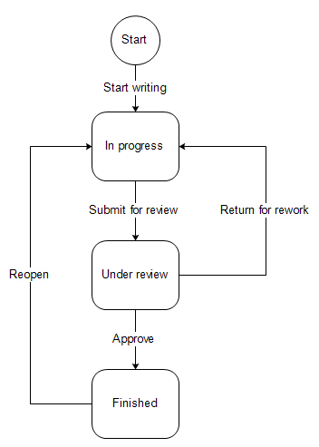

In the process of the work with the customers information saved in the CRM system can be changed: carts turn into orders, what seemed to be a potential opportunity appears not to be worth effort or tuns into a successful deal, customer support requests are processed and closed, and so on. These and other processes are reflected in OroCRM with creation of new records, change of record properties and creation of new relations. (For example - a new lead appeared, and while processed, it was related to a customer and a contact, and turned into a new opportunity.
In many cases success of the business depends a lot on the unity of the procedures followed all through the company. How many times can you call a customer? Can you close an opportunity as lost without an explanation? What should you do if a customer has added some goods to the cart but hasn’t ordered them?
In OroCRM there can be defined workflows, that system users should follow in order to process entities. For example, a workflow for processing an abandoned cart (when a customer has added at least one item but has not purchased anything) will allow a manager to convert the cart into an order at any moment, but will not let set a cart to the “abandoned” status until the customer has been contacted successfully.
In a technical language, a a workflow is a sequence of industrial, administrative or other processes applied to a piece of work from the initiation to completion that can be defined for records of specific type.
This article is aimed to provide the understanding of workflows and ways to follow them. The way to create workflows is described in the part of the guide sharpened for the system administrators.
Each of the processes or actions applied to a record is a workflow transition and the state of this record before or after a transition is a workflow step.
Each transition connects two steps.
In the example below you can see a simple workflow of a document creation.
The workflow steps are “Start” and squares (In progress, Under review, Finished) and correspond to the state of the document.
Start step is used only to specify the first condition (basically the record is in the “Start” step before its processing has started.
The workflow transitions are the arrows that show what action can be applied to the document at a certain step.
Attributes is another name for properties. For example, ZIP code and street name are attributes of an address.
In the course of each transition you can change some attributes of the record processed. For example, document attributes may be “Name” that must be defined after transition “Start Writing” and can be changed after transitions “Submit for review” and “Return for rework” and “Number of Pages” that must be defined after “Submit for review” and can be changed after it has recieved the “Approved” status.
If the workflow starts from creation of a record, the transition buttons are available in the top right corner of the grid.
E.g. Start From Lead and Start From Opportunity that create a new Lead or Opportunity record at the start of a Sales Process workflow.
Button of all the transitions, for which pre-conditions (if any) are met, are displayed at View pages of the entity records.
E.g. Develop, Close As Won and Close As Lost buttons on a View page of a Sales Process record qualified to an opportunity.
The current step, or all the steps performed can be displayed on the entity grid, subject to the settings defined for the entity in your organization (the “Entity Management → Workflow Step on Grid” settings).
All the performed steps of the workflow are displayed at the widget on the top of the View pages of the entity records, subject to the Workflows → General → Show Ordered and Workflows → Designer → POSITION settings.
The workflows will help the system users to make a decision and ensure that they stay within the company-approved procedures.